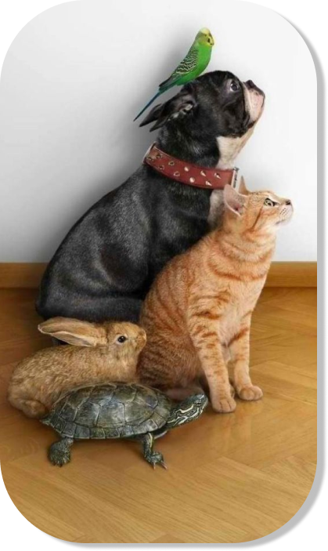

BOAS-VINDAS AO SEU HUB DE CONTEÚDO VETERINÁRIO
Aqui você encontra casos práticos, baseados na realidade do médico veterinário, os médicos cadastrados podem criar e compartilhas conteúdos com base na experiência do dia-a-dia. Além de, diversas Ferramentas para auxiliá-lo no dia-a-dia do seu consultório.
“Mesmo longe, estamos conectados.”
